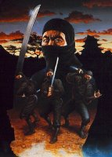

МЕСТНЫЙ ЖИТЕЛЬ
Dias

| Раса: |
Githyanki |
| Пол: |
Мужской
|
| Профессия: |
Нинзя |
| Align: |
Chaotic-Evil |
| Клан: |
Invader (may be) |
| Религия: |
Enki |
Мрачная фигура, одетая во все черное, как и положено нинзе.
Как и положено нинзе, это убийца. Опасный и безжалостный,
подлый и бесстрашный. Очень любит деньги и чужие вещи,
но воровать - это ниже его достоинства, и он предпочтет
убить. Жертва сможет увидеть лишь взгляд его глаз сквозь
щелку одежды, а потом ослепнет. Обязательно ослепнет, ибо
он всегда ослепляет жертв перед смертью. Это привычка.